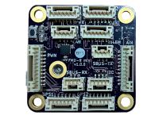
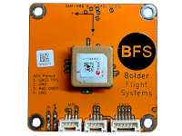
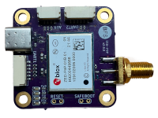
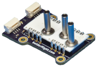
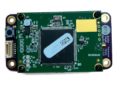
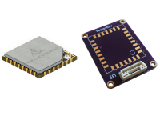
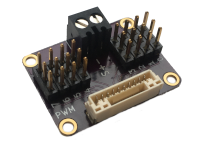
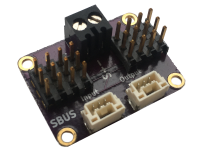
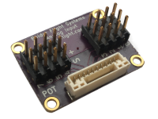

Manned Aircraft Data Acquisition Systems
The most innovative data acquisition systems available.
UAS Data Acquisition and Flight Control Systems
Our flight control systems feature tight integration with MATLAB and Simulink to rapidly develop, test, and analyze flight software and control laws. Our GNSS receivers and radio modems deliver class-leading performance and are compatible with all UAS autopilot and flight control systems.
Research Flight Management Unit (FMU-R)
Ideal for researchers, educators, and makers. Optional integration with BeagleBone Black.
mini Research Flight Management Unit (mini FMU-R)
Our Research Flight Management Unit packed into a 30 x 30mm footprint.
SAM-M8Q GNSS Receiver
Multi-constellation GNSS receiver and magnetometer. Compatible with all flight control systems.
ZED-F9P GNSS Receiver
High-performance L1/L2 GNSS receiver in a 30x30mm footprint. Compatible with all flight control systems.
AMS-5915 Air Data Sensor
High-performance static and differential pressure sensor, compatible with the FMU-R and mini FMU-R.
Freewave Radio Modem
Extremely long-range, 900 MHz and 2.4 GHz telemetry modems. Compatible with all flight control systems.
VectorNav Adapter
Add a VectorNav VN-100, VN-200, or VN-300 to the full-size Research Flight Control System.
PWM Breakout
Breaks out PWM JST-GH connector to standard servo headers.
SBUS Breakout
Breaks out SBUS JST-GH connector to standard servo headers.
Analog Breakout
Breaks out analog JST-GH connector to standard servo headers.